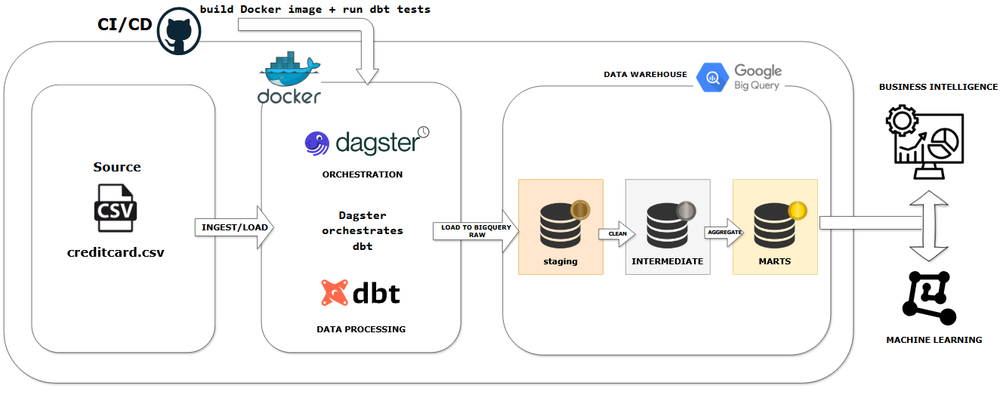
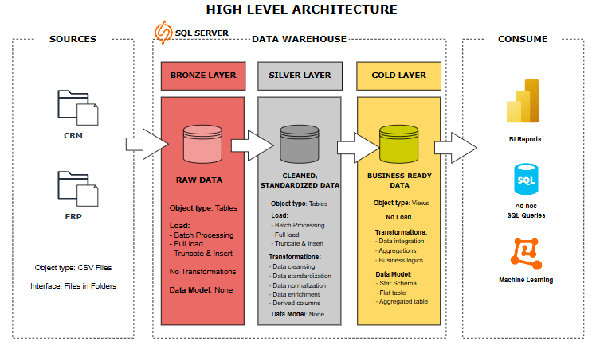
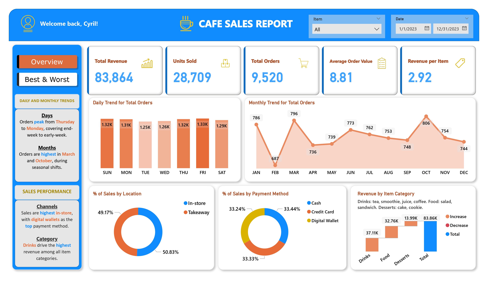

Data Engineer & Analytics Specialist
Designing scalable, cloud-native data pipelines that transform raw chaos into decision-making power.
I'm a self-starter who doesn't wait for a roadmap. Pivoting from Electrical to Data Engineering, I've built my skills by diving deep-learning not just how to use tools, but how to master them. When I learn something, I learn it completely, ensuring my work is robust, not just functional.
I'm just starting out, which means I bring a hunger to prove myself and a fresh perspective to every challenge.

Python · dbt · Dagster · BigQuery

SQL Server · ETL · Star Schema

MySQL · Power BI · Analytics
IoT · ESP32 · Embedded C++
Browser Extension · TypeScript
A power-user extension for Indeed that reveals hidden job posting dates, applicant counts, and salary ranges. Includes a "Healing Loop" for single-page app persistence and local storage syncing.
Building more cool stuff...